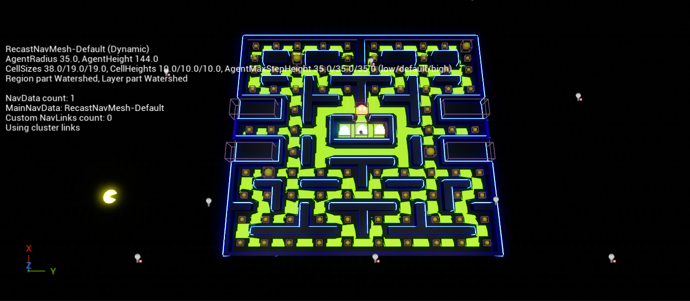
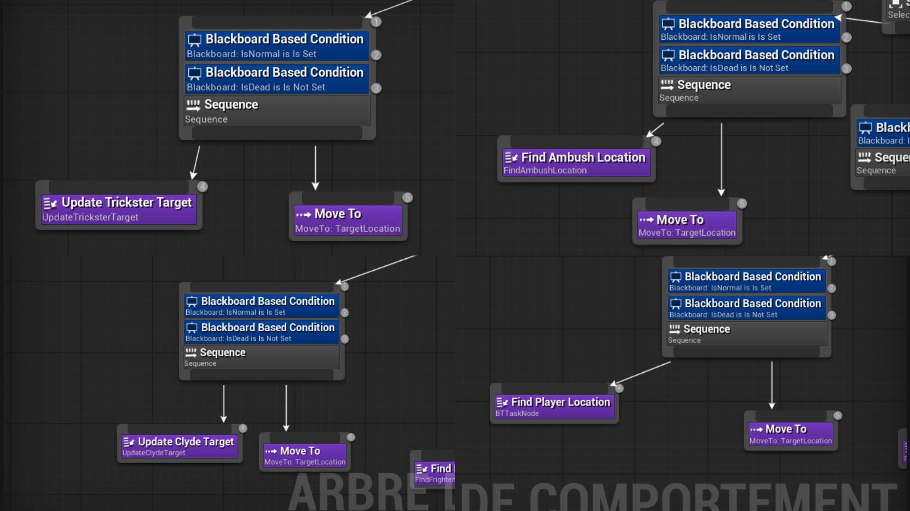

Pac-Man sous Unreal Engine : contrôlez Pac-Man poursuivi par quatre IA fantômes aux comportements distincts.
Pac-Man est une réimplémentation du classique arcade développée sous Unreal Engine avec un système d'intelligence artificielle avancé pour les quatre fantômes, chacun avec son propre comportement de poursuite.
Quatre fantômes avec comportements uniques et intelligents.
Développé avec Unreal Engine et C++ pour des performances optimales.
Fidèle au jeu original avec mécaniques modernes.
Développer quatre intelligences artificielles distinctes pour les fantômes, chacune avec sa propre stratégie de poursuite basée sur les comportements originaux de l'arcade : Blinky agressif, Pinky anticipateur, Inky tactique et Clyde imprévisible.
Reproduire fidèlement les mécaniques de gameplay du Pac-Man original tout en profitant des capacités d'Unreal Engine pour améliorer les visuels et la fluidité, tout en préservant l'équilibre de jeu légendaire.
Implémenter un système de navigation efficace utilisant le NavMesh et les Behavior Trees d'Unreal Engine pour que chaque fantôme calcule son chemin de manière optimale tout en exprimant sa personnalité.
Dans mon projet inspiré de Pac-Man, j’ai conçu une carte en m’appuyant sur un Volume de limite de maillage de navigation, permettant de définir précisément les zones où les entités peuvent se déplacer. La structure du labyrinthe a été pensée pour assurer une navigation fluide et cohérente.
Les murs ont été réalisés sous forme de blocs creusés, ce qui permet de délimiter clairement les chemins tout en optimisant la gestion des collisions et des déplacements. Cette approche garantit une bonne lisibilité du niveau et un gameplay équilibré.

Pour gérer le comportement des quatre fantômes, j’ai mis en place des Behavior Trees permettant de contrôler leurs déplacements et leurs prises de décision de manière dynamique.
Chaque fantôme possède une logique similaire basée sur des conditions (états normal ou éliminé), mais avec des variations dans la manière de déterminer leur cible. Des tâches spécifiques permettent par exemple de récupérer la position du joueur ou de calculer des positions stratégiques, avant d’utiliser des actions de déplacement pour poursuivre ou anticiper ses mouvements.
Cette approche permet d’obtenir des comportements crédibles et différenciés entre les fantômes, tout en gardant une structure modulaire et facilement ajustable.

Le gameplay repose sur un système de collecte de points à travers deux types de gommes. Les gommes classiques permettent d’augmenter progressivement le score du joueur, tout en l’incitant à explorer l’ensemble du labyrinthe.
Les pac-gommes, quant à elles, introduisent une mécanique stratégique en déclenchant un changement d’état des fantômes. Lorsqu’elles sont consommées, les ennemis passent en mode fuite, modifiant temporairement leur comportement et offrant au joueur une opportunité de reprendre l’avantage.
Ce système crée un équilibre entre prise de risque et récompense, rendant le gameplay plus dynamique et engageant.